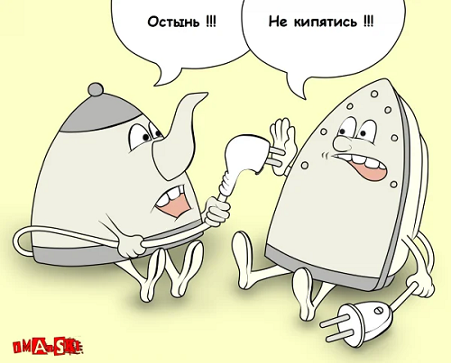

Ежедневно мы сталкиваемся с огромным количеством онлайн- и офлайн-коммуникаций. С их помощью мы знакомимся, общаемся, решаем рабочие задачи и строим карьеру. Коммуникативные навыки сегодня важны не меньше, чем опыт и профессиональные навыки. Рассказываем, как добиться того, чтобы ваша коммуникация всегда была максимально эффективна. Немного теории, или что делает коммуникацию эффективной.
Развитие коммуникаций. На сколько это важно.
Для начала давайте определимся с терминами. Какую коммуникацию можно считать эффективной? Коммуникация — это процесс обмена информацией между двумя и более людьми. Инициатор коммуникации (т. е. отправитель) генерирует какой-то посыл, кодирует его (т. е. выбирает, в какой форме его донести) и определяет подходящий канал коммуникации. Получатель в свою очередь декодирует этот посыл (т. е. расшифровывает его значение) и дает отправителю обратную связь. Таким образом цепочка коммуникации замыкается в круг.
Соответственно, эффективная коммуникация состоялась, когда отправитель успешно донес основной посыл и получил об этом обратную связь от получателя.
Чтобы коммуникация была эффективной, у нее, во-первых, должна быть четкая цель, во-вторых — минимальное количество помех, и в-третьих — язык кодирования и декодирования должен быть примерно одинаков.
Как улучшить свою коммуникацию?
Если мы говорим о бизнес-коммуникации, то этот этап ни в коем случае нельзя пропускать. Помните: чтобы быть эффективной, у коммуникации должна быть цель.
-
Сформулируйте для себя ответы на следующие вопросы:
- С какой целью вы вступаете в коммуникацию?
- Что вы хотите донести?
- Какой результат хотите получить?
И перед каждой рабочей встречей / совещанием / электронным письмом и т.д. обязательно формулируйте с помощью этих вопросов своё основное сообщение и цель, которой вы хотите достичь. Подумайте, что должен сделать человек после общения с вами, и оформите это в понятный призыв к действию. Это хорошее правило любой коммуникации.
В общем существует 3 вида коммуникации: устная, невербальная и письменная.
Устная — это наше с вами живое общение. Такая коммуникация более естественна, ее может подкреплять невербальная (наши жесты, движения, позы, мимика) и дополнять эмоциональный посыл. Но в такой коммуникации и помех существенно больше.
Письменная коммуникация позволяет нам быть более четкими и конкретными, поэтому считается более эффективной. К тому же, она помогает избегать многих помех, например культурного кода. Но такая коммуникация чаще всего лишена эмоционального посыла.
Какой канал выбрать, зависит от ваших возможностей, желаний и контекста. В любом случае запомните правило эффективной коммуникации: всегда задействуйте два канала передачи информации.
Устная + невербальная: подкрепляйте свои слова жестами — это поможет с большей вероятностью донести свою мысль и избежать многих помех. Плюс так ваш посыл лучше отпечатается в сознании собеседника и ему сложнее будет забыть сказанное.
Устная + письменная: все устные договоренности подтверждайте письменно, а письменные — проговаривайте устно. Провели совещание вживую? Напишите всем участникам письмо с итогами и зафиксируйте полученную информацию. Поставили коллеге задачу? Озвучьте ее при встрече. Если вы работаете удаленно, старайтесь чаще использовать голосовые сообщения и связываться с командой по видеосвязи, особенно для обсуждения важных вопросов, чтобы задействовать сразу два канала коммуникации.
Больше всего помех возникает на этапе кодирования / декодирования информации и во время непосредственно коммуникации.
-
Выборочное восприятие.
Из-за своих когнитивных искажений (систематических отклонений в восприятии и мышлении, обусловленных субъективными убеждениями, стереотипами и т.д.) человек воспринимает информацию выборочно. Другими словами, он слышит только то, что хочет слышать, подтверждая таким образом свое мнение.
Когнитивные искажения свойственны всем и могут очень мешать в коммуникации, ведь получатель изначально настроен не услышать от отправителя что-то новое, а подтвердить уже существующую и приемлемую для него точку зрения. Если вы понимаете, что собеседник не воспринимает какую-то часть информации, проанализируйте канал и кодирование. Возможно, вы объясняете слишком сложно — используете непонятную терминологию, сленг, у вас слишком агрессивная или запутанная подача и т.д. Будьте корректны, конкретны и просты.
-
Фильтрация.
Это использование фильтра информации, в результате которого на уровень обработки поступает только часть полученной информации. Т. е. человек даже не воспринимает кодирование до конца. Чтобы минимизировать фильтрацию, как раз и нужно задействовать несколько каналов коммуникации.
-
Семантические барьеры.
Семантические барьеры возникают, когда люди просто не понимают значение некоторых слов / жестов. Такие барьеры могут возникнуть в коммуникации не только людей из разных стран, но и людей разных профессий, поколений или социальных слоев. В появлении такой помехи может быть вина отправителя – например, когда он старается выглядеть очень умным и намеренно усложняет свою речь.
Способ справиться с семантическими барьерами один — максимально упрощать. Но не идею или процессы, а саму коммуникацию. И обязательно обращайте внимание на свою невербалку, особенно если работаете в международной команде — некоторые жесты могут означать совершенно разное в разных странах.
-
Культурный код.
Если обобщить, то это культурное бессознательное, сформированное годами. Культурный код нации определяет ее психологию и помогает понять ее поведенческие реакции.
Для эффективной коммуникации очень важно понимать культурный код собеседника, особенно если вы общаетесь с кем-то из-за рубежа. Например, если в Китае разговаривать с коллегой на повышенных тонах (а у нас эмоциональность — частая практика), он в итоге может взять больничный, чтобы лечиться от эмоционального выгорания. Потому что там не принято коммуницировать вот так.
-
Разные уровни собеседников.
Речь идет в первую очередь об уровне мотивации. Тот, кто инициирует общение, всегда более мотивирован достичь какого-то результата. Это обязательно нужно учитывать и закладывать дополнительную мотивацию для получателя, чтобы поднять его уровень заинтересованности и вовлеченности в процесс коммуникации.
Плохая обратная связь — это не негативная реакция на ваши сообщения (как многие могут подумать), а ее полное отсутствие. Обратная связь — обязательный элемент коммуникации, без какого-либо фидбэка (отклик, реакция) от получателя она просто не может считаться эффективной.
Если вы ее не получили, стоит заново проверить всю цепочку коммуникации и понять, что пошло не так: выбрали не тот канал коммуникации, не проработали помехи, не сформулировали призыв к действию и т.д. И помните: вся ответственность за получение обратной связи лежит именно на инициаторе коммуникации.
Что же мешает нам донести свою мысль до других?
Правила эффективной письменной коммуникации
Письменная коммуникация занимает в нашей жизни особое место. Мы переписываемся всегда, везде и со всеми. Даже деловая переписка уже не ограничивается почтой, а переходит в мессенджеры. Поэтому так важно соблюдать элементарные правила переписки.
- Соблюдайте принцип: одно письмо / сообщение = одна тема и один мессенджер.
- Придерживайтесь четкой структуры: тема, заголовок, основная мысль, вывод, призыв к действию. Никакого потока сознания.
- Делайте письменные резюме встреч и фиксируйте устные договоренности.
- Ставьте людей в копию правильно: уточните, кто за что отвечает и кого когда уместно подключать к задачам. Например, руководителя не обязательно ставить в копию абсолютно всего, потому что он не должен заниматься всей операционной работой.
- Пишите кратко и по сути (тут даже без комментариев).
- Уделяйте внимание грамотному оформлению текста: делайте абзацы, будьте грамотны, выделяйте важное с помощью форматирования.
- Уточняйте ответственного, когда ставите задачи: ответственный за выполнение должен быть один, все остальные — вовлеченные. Размыть ответственность между двумя и более людьми чаще всего означает, что никто за эту задачу не возьмется.
Как избежать информационного перегруза?
Мы поговорили о том, как много вокруг коммуникации — эффективной и не очень. В таком огромном количестве информационных потоков очень важно не выгореть и не потерять интерес к работе, общению и другим людям. Избежать перегруза и выгорания поможет минимальная информационная гигиена.
Определите свои приоритеты в данный момент времени (какая информация для вас сейчас нужна и актуальна, а какая — нет).
- Отключите неприоритетную информацию (почистите ленту Facebook, отпишитесь от неприятных вам людей, не принимайте просьбы, которые вы не можете (или не хотите) выполнить).
- Проверяйте достоверность информации с помощью нескольких источников.
- Составьте свое личное мнение по пунктам, приоритетным в вашей жизни, но будьте готовы к тому, что оно не является единственно верным.
- Контролируйте эмоции и осознанно ими управляйте, т. е. развивайте ваш эмоциональный интеллект.